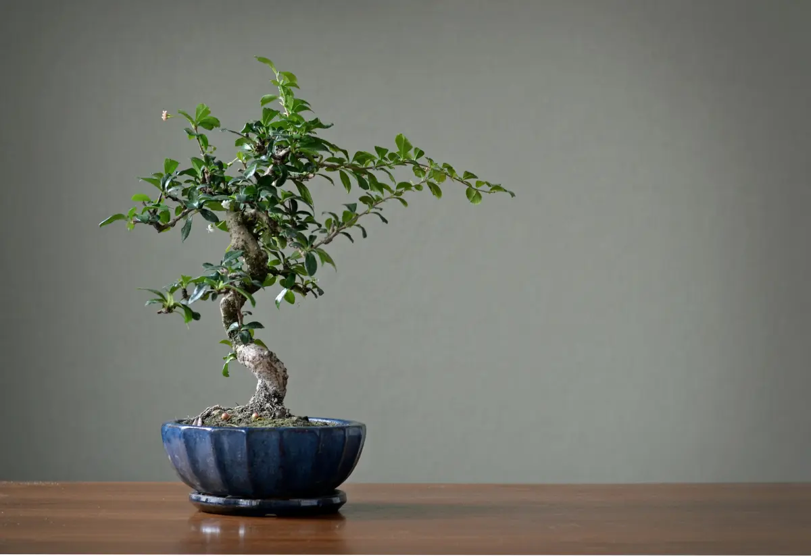

"Cómo Empezar con tu Primer Bonsái"
Guía Completa para Principiantes: Un artículo que detalla los pasos iniciales para elegir, plantar y cuidar un bonsái para aquellos que recién comienzan.
Ir al articulo